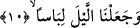

nimet demektir.
Bâzı âlimler “sübâten” kelimesine başka bir anlam vererek âyet-i kerîmeyi şöyle
tefsir etmişlerdir: “Biz uykunuzu hayvani güçleri rahatlatmak ve yorgunluğu gidermek
için hareket ve histen kesme vâsıtası kıldık.” Ancak bizim yukarda verdiğimiz birinci
anlam -ilerde görüleceği üzere- ifâdenin akışına daha uygundur.
10. Geceyi bir örtü yaptık.
İçinde uykunun gerçekleştiği “geceyi bir örtü yaptık.” Âyette “örtü” anlamı, elbise
mânâsındaki “libas” kelimesi ile ifâde edilmiştir. Arapçada “lebise’s-sevbe” denilir ki,
“elbise giydi” anlamındaki bu cümleyle “onunla örtündü” anlamı kasdedilir. İnsanı
çirkin şeylerden örten her bir örtü, “libas” kılınmıştır. Bu nedenle “Kadınlar sizin için
birer elbise, siz de onlar için birer elbisesiniz” (el-Bakara 2/187) âyetinde beyan
buyrulduğu üzere kadın, kocasının kötülük işlemesine mâni olduğundan ve onu
kötülüklerden alıkoyduğundan ötürü kocası için bir örtü, ayrıca koca da kadın için bir
örtü kılınmıştır. Temsil ve benzetme yoluyla takvâ da “örtü” sayılmıştır. Ayrıca korku ve
açlık da, temsil ve teşbih yoluyla tasvir ettiklerinden dolayı örtü sayılmışlardır.
Nitekim, “Filan kişi fakirlik zırhını, açlık libasını giydi” denilir. Bu açıklamalar
ışığında âyet-i kerîme şu anlama gelir: “Elbise sizi nasıl örtüyorsa geceyi de o şekilde
karanlığıyla sizi örten bir örtü yaptık.” Herhalde bununla kasdedilen, uyku esnasında
insanın kendisine sarılıp örtündüğü yorgan ve benzeri nesneler olsa gerektir. Gerçekten
gecenin yorgana benzetilmesi çok mükemmel bir benzetme ve maksadın elde edilmesi
açısından çok faydalı bir başvurudur.
Fütûhât sâhibi demiştir ki: Gece, gece ehlini ağyârın nazarından gizleyen elbisesidir.
Böylece her biri kendi halvetinde istidâdı nisbetince Hakk’ın onunla konuşmasının,
Allah’ın huzurunda bulunmanın ya da O’nun müşâhedesinin lezzetinden nasip alırlar.
Hazret-i Şeyhü’l-İslâm (k.s.) buyurmuştur ki: Gece bu yolun yolcularının perdesidir,
gündüz ise seherde uyanık olanların pazarıdır.
Nitekim şair şöyle der:
Aşıkların örtüsü gece!
Devam etse, devam etse!
Gecenin yarısında, onun hayâli dostum olduğundan
Ben gecenin kölesiyim, gündüz de pazarımdır.
Allah Teâlâ geceyi, ölüm olarak tanıttığı uyku vakti, gündüzü de uyanık olma mahalli
kılmıştır. Bu uyanık olma, şimdi gelecek olan âyette hayatta olma, çalışıp kazanma
kelimeleriyle ifâde olunmuştur.